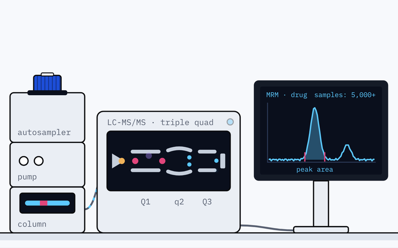
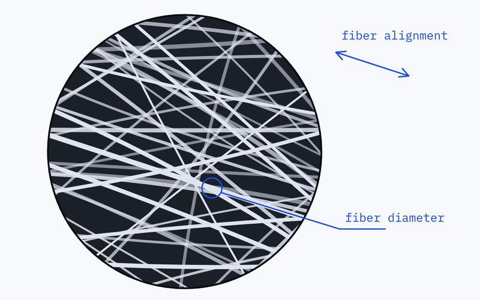
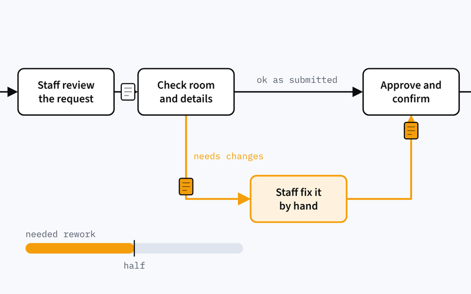
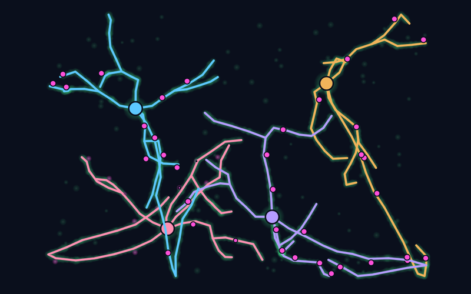

EndoTherapeutics, Inc.
Non-Invasive Oral Interface for Infant Flexible Laryngoscopy
A pacifier-style interface that guides a flexible scope into an infant's airway, designed so the exam can be done without anesthesia.
Read the case studyBiomedical Engineering
BiomaterialsMedical DevicesTranslational Research
I am a Biomedical Engineering student with experience in medical device prototyping, CAD design, benchtop testing, biomaterials research, and regulated documentation. My work has focused on turning clinical or technical problems into testable prototypes, using data and design feedback to improve performance, manufacturability, and safety.

3 years of biomedical research experience, including 2 years in R&D and product development
M.S. Biomedical Engineering CandidateUniversity of South Florida
EndoTherapeutics, Inc.
A pacifier-style interface that guides a flexible scope into an infant's airway, designed so the exam can be done without anesthesia.
Read the case study
Axogen, Inc.
Characterizing a slow-release drug system for nerve repair, and the mass spectrometry work that showed how long it stays stable.
Read the case study
TTEB Lab, University of South Florida
Spinning polymer fibers into scaffolds for tissue-engineered heart valves, and testing how their structure shapes the way they stretch.
Read the case study
Manufacturing & quality engineering
Tracing why more than half of student room reservations needed rework back to one failure mode, and proposing a process that prevents it.
Read the case study
Biomedical instrumentation, USF
A wearable that reads back-muscle activity and posture, and vibrates the moment a lift turns unsafe.
Read the case study
Auditory Development & Connectomics Lab, USF
Tracing hundreds of neurons in 3D microscopy data to map how the auditory pathway wires itself during development.
Read the case studyEmbedded systems
A spectral light sensor, PCB and live readout that flag blue-light exposure, a common migraine trigger.
Biomechanics modeling
A MATLAB model applying Laplace's law to show how pressure, flow and vessel geometry drive wall stress.
Instrumentation
A photoplethysmography front end simulated in LTSpice, and an ESP32 cane that detects falls and sends alerts.
Technical skills
Methods, equipment, software, manufacturing and validation, each linked to the project it came from.
| Competency | Evidence | Applied in |
|---|---|---|
| Biomaterials | Electrospinning, SEM, FTIR, Raman, AFM and contact angle | Heart valve scaffolds |
| Mechanical testing | Instron tensile, compression and cyclic testing, and biaxial testing | Oral interfaceHeart valve scaffolds |
| Analytical chemistry | LC-MS/MS sample preparation and analysis, drug loading and release kinetics, and stability studies | Drug delivery |
| Product development | SolidWorks CAD and FEA, design for manufacturing, 3D-printed molds and tooling, silicone casting and snap-fit assembly | Oral interface |
| Instrumentation | Arduino, EMG, IMU and flex sensors, KiCad PCB design and LTSpice | Lifting wearable |
| Data analysis | Python, MATLAB, Excel, GraphPad Prism, ImageJ, Seg3D and syGlass | Drug deliveryLifting wearableAuditory circuits |
| Cell-based assays | Cell culture, sterile technique, neurite outgrowth assays with DRG neurons, and fluorescent staining and imaging | Drug delivery |
| Quality engineering | ISO 13485, ISO 14971, GLP/GMP SOPs, Lean Six Sigma DMAIC, root cause analysis and control plans | Oral interfaceLean Six Sigma |
Leadership & outreach
Mentoring, sponsorships and events that connect students with each other and with industry.
2024 – 2026
Society of Women Engineers, USF
Ran the chapter's mentorship program, matching more than 60 members with mentors and organizing professional development events.
2023 – 2024
Society of Hispanic Professional Engineers, USF
Brought in $10,000 in corporate sponsorships and organized the chapter's largest career fair, with more than 200 attendees.
2024 – 2025
Biomedical Engineering Society, USF
Guided first- and second-year BME students through academic planning, early research skills and their first engineering courses.
About
I earned my B.S. in Biomedical Engineering at the University of South Florida and I'm now completing my M.S. there, with a thesis in biomaterials and tissue engineering.
My experience spans both sides of biomedical engineering: research in drug delivery, tissue engineering and neuroscience, and hands-on device work in CAD, molding, casting and verification testing under ISO 13485 and ISO 14971.
I'm drawn to work that starts with a clinical need and ends with something that can be tested, made and trusted.
Contact
I'm open to roles in medical device R&D, manufacturing and process engineering, and to research in biomaterials and tissue engineering.